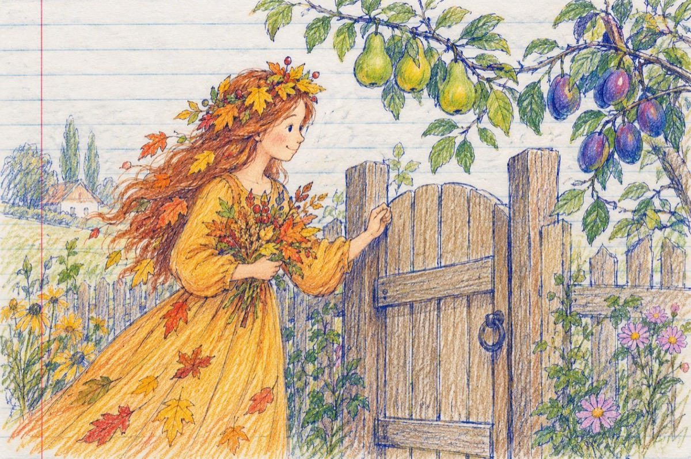

Cine e....
- Bate cineva la ușă
Să deschideți, nu mă bag!..
- Eu sunt toamna jucăușă,
Am venit la voi cu drag!...
- La ce vii așa devreme?
Zice părul, eu socot
Că ești cam grăbită Lele,
Nu vezi că eu nu m-am copt?
Prunele și ele au sărit,
Și de-atâta supărare
S-au învinețit!
-Tu nu vezi că încă-i vară cu mult soare,
Lele, cred că te-ai grăbit?!...
-Ai venit repede-n vii,
Și ne-ai amețit de tot
Nu puteai să ne mai ții
În septembrie, ne-am copt?!...
Cineva te-a amenințat
Cumva de afară
Că ceva s-a întâmplat
O fi, Jupâneasa Iarnă?!
Te rugăm să ne mai ții, tu iubită toamnă!
Vasile Groza